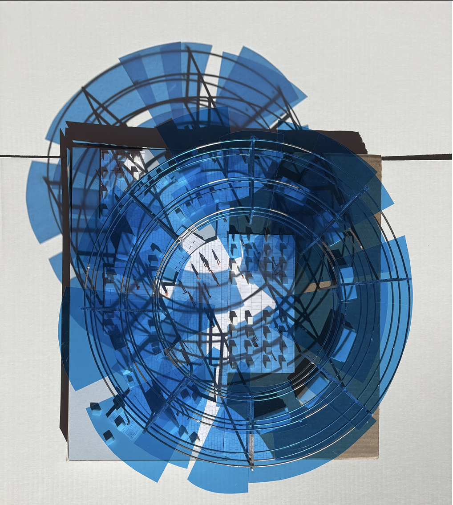

Selected Projects
A collection of design explorations, ideas, and experiences.

01 / FEATURED PROJECT
Filtered Horizons
Architecture · 2025
This project aimed to create a shade structure on Tempe Town Lake. We produced a 3-tier shade structure that not only responded to its environment but also provided an outdoor gathering space. We emphasized radial circulation, layered shading, and a central gathering zone.
Explore Project →More Projects

Memorial Garden
Architecture · 2026

Sun, Water, Earth Gardens
Architecture · 2025